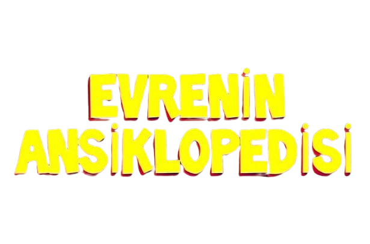

Teleskoplardan kara deliklere, gezegenlerden yıldızlara, ISS'den sondalara: Bilmeniz gereken her şey burada.
Ana Sayfaya Dön

Teleskoplardan kara deliklere, gezegenlerden yıldızlara, ISS'den sondalara: Bilmeniz gereken her şey burada.